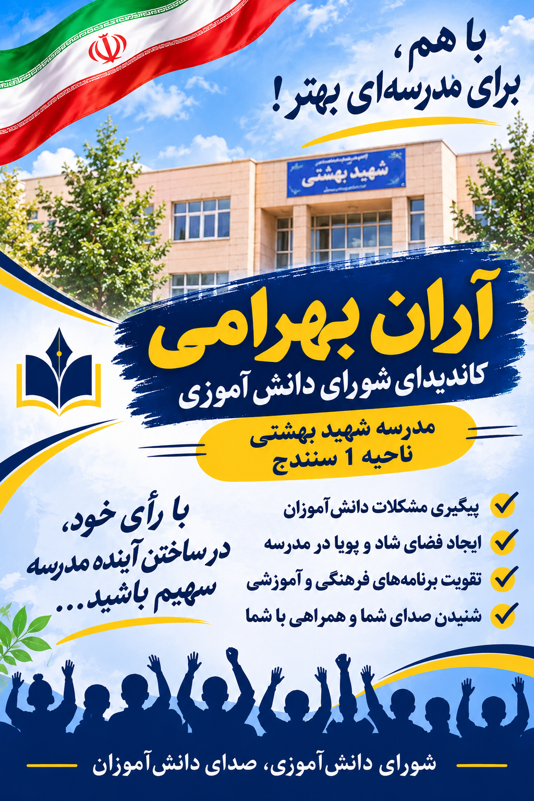

صدای تو،
قدرت تغییر ما
سلام! من آران بهرامی هستم. آمدهام تا صدای شما باشم و برای ساختن مدرسهای بهتر، شادتر و صمیمیتر تلاش کنم. با هم میتوانیم تغییرات خوبی ایجاد کنیم.
سلام! من آران بهرامی هستم. آمدهام تا صدای شما باشم و برای ساختن مدرسهای بهتر، شادتر و صمیمیتر تلاش کنم. با هم میتوانیم تغییرات خوبی ایجاد کنیم.
آشنایی بیشتر با نامزد شورای دانشآموزی
من آران بهرامی، دانشآموز دبیرستان شهید بهشتی ناحیه ۱ سنندج هستم. هدف من حضور مؤثر در شورای دانشآموزی، شنیدن نظرات شما و تلاش برای ایجاد محیطی شادتر، بهتر و صمیمیتر در مدرسه است. من معتقدم با همکاری و همدلی میتوانیم مدرسهای بهتر برای همه بسازیم.
چند ایده برای ساختن مدرسهای بهتر
شنیدن پیشنهادها و مشکلات دانشآموزان و انتقال آنها به مسئولان مدرسه.
تلاش برای برگزاری مسابقات علمی، فرهنگی، هنری و ورزشی.
حمایت از پیشنهادهای خلاقانه برای بهتر شدن فضای مدرسه.
ایجاد ارتباط بهتر میان دانشآموزان و مسئولان مدرسه.
تلاش برای ایجاد فضایی بانشاط، سالم و دوستانه.
تشویق به همکاری درسی و تبادل تجربه میان دانشآموزان.
با انتخاب آران بهرامی، صدای تغییر باش!

انتخاب شما، مسئولیت من است.
پیشنهادها و نظرات خود را با من در میان بگذارید.
با رأی خود به آران بهرامی فرصت دهید
تا برای ساختن مدرسهای بهتر تلاش کند.
دبیرستان شهید بهشتی ناحیه ۱ سنندج